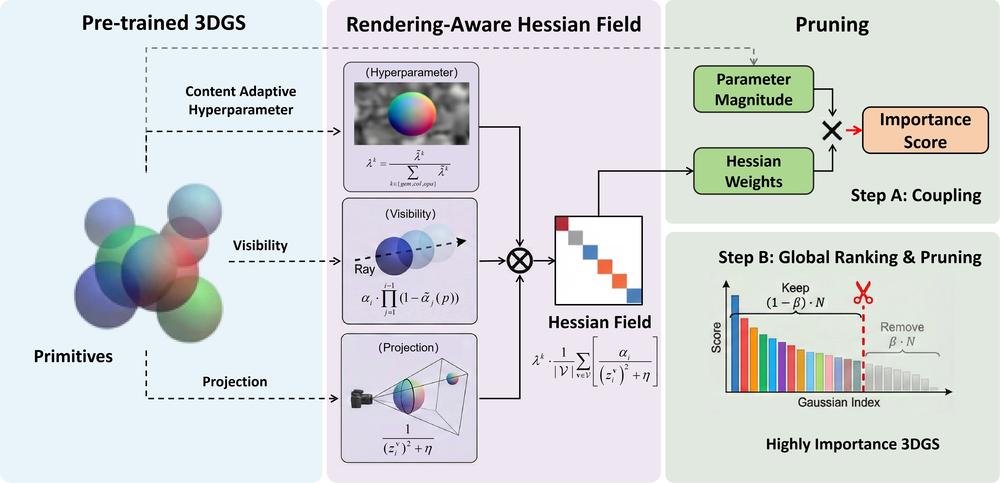
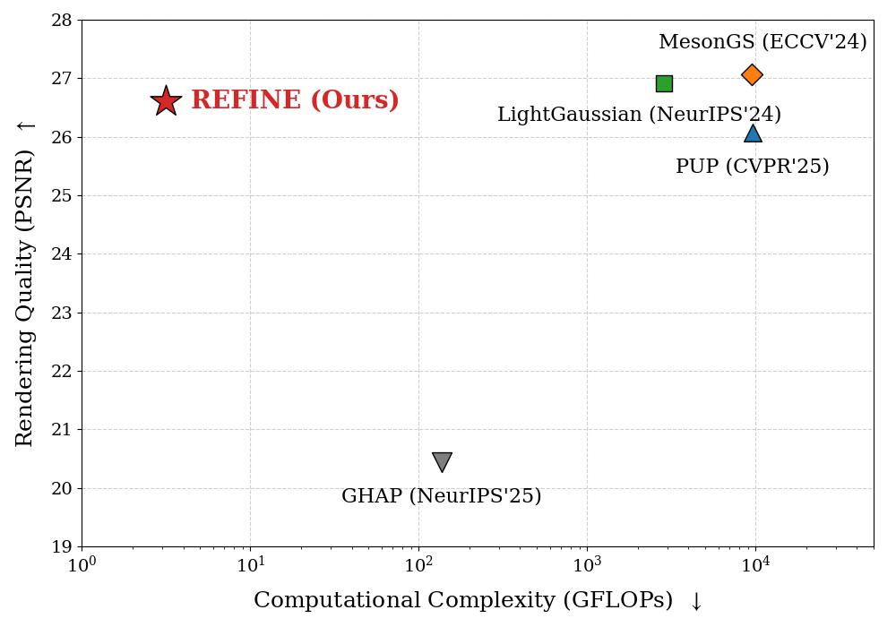

01
Parameter-only importance
Fast criteria based on opacity or geometry avoid rendering, but do not fully capture how a primitive affects image fidelity.
Preserving rendering fidelity without rendering to estimate primitive importance: a fast, plug-and-play post-processing framework for 3D Gaussian Splatting.

For the paper's full overview figure, add:
image/overview.jpg
Overview
Existing pruning methods for 3D Gaussian splatting (3DGS) suffer from either severe quality degradation or prohibitive computational overhead. In this paper, we propose REFINE, a highly accelerated 3DGS pruning framework centered on a novel rendering-free primitive importance metric. Our approach leverages an analytically approximated, rendering-aware Hessian field to quantify the expected perceptual error induced by the removal of individual primitives. By modeling the joint modulation of visibility, projection geometry and the content-adaptive hyperparameter, we entirely bypass costly forward rendering passes and derive an anisotropic perceptual weight field that serves as a high-fidelity proxy for primitive importance. Extensive experiments across multiple benchmark datasets demonstrate that REFINE maintains highly competitive rendering quality while achieving a 3,000× reduction in pruning-related computational complexity, translating to a practical 20× speedup in device latency compared to state-of-the-art pruning methods.
Why REFINE?
How can we identify Gaussians that matter to the final image without paying the cost of evaluating that image?
Fast criteria based on opacity or geometry avoid rendering, but do not fully capture how a primitive affects image fidelity.
Pixel-space accumulation or Hessian sensitivity can better reflect rendering quality, but repeated rasterization introduces substantial compute.
Estimate rendering-aware sensitivity analytically from visibility, projection, and scene-adaptive attributes—without forward rendering.

image/trade_off.jpegCopy the manuscript's fig/trade_off.jpeg here.
Rendering-aware importance does not have to require an expensive renderer during pruning. REFINE starts from the Gauss–Newton / Fisher interpretation of image-space sensitivity, then approximates the field with simple physical factors.
Methodology
REFINE replaces costly image-space sensitivity accumulation with a structured analytical approximation of a rendering-aware Hessian field.
The Gauss–Newton matrix H = JᵀJ describes how Gaussian parameter perturbations alter the rendered image.
Estimate view-dependent influence using opacity, with a conservative zero-occlusion approximation instead of explicit depth sorting.
Approximate image-space influence from camera-relative depth using an inverse-square geometric term.
Calibrate geometry, color, and opacity sensitivity from scene statistics; rank primitives and remove the lowest scores.
Combines opacity, viewpoint-relative depth, and content-adaptive weights; the paper uses η = 0.05 for numerical stability.
Attributes k cover geometry, color, and opacity. All primitives are ranked by importance and the lowest-scoring fraction is removed.
A conservative approximation lets primitive opacity stand in for accumulated visibility without alpha-blending rasterization.
Camera-relative depth summarizes the effect of perspective geometry on the spatial contribution of a Gaussian.
Color variance, opacity ambiguity, and scale anisotropy adjust the weighting of appearance and geometric attributes.
Experiments
Results from the provided ECCV 2026 manuscript. All main pruning-quality comparisons are zero-shot, without post-pruning fine-tuning.
PSNR ↑ / SSIM ↑ / LPIPS ↓ represent rendering quality; time and GFLOPs are pruning-related costs.
| Method | PSNR ↑ | SSIM ↑ | LPIPS ↓ | Time (s) ↓ | GFLOPs ↓ |
|---|---|---|---|---|---|
| REFINE (Ours) | 26.61 | 0.800 | 0.233 | 3.85 | 3.14 |
| LightGaussian | 26.92 | 0.806 | 0.225 | 30.07 | 2855.78 |
| MesonGS | 27.06 | 0.809 | 0.222 | 41.43 | 9539.19 |
| PUP 3D-GS | 26.07 | 0.790 | 0.241 | 37.02 | 9582.81 |
| GHAP | 20.44 | 0.571 | 0.470 | 10.70 | 136.23 |
Importance-evaluation GFLOPs · logarithmic bar scale
At 50% pruning, REFINE uses around 3,052× fewer GFLOPs than PUP 3D-GS on Mip-NeRF 360.
The table reports dataset-level values from the supplied paper, not live benchmarks. Processing time includes pruning-related work; very low GFLOPs need not imply an equal factor of wall-clock acceleration.
Interactive Demo
Inspect qualitative scene differences using the existing interactive viewer. The demo stays in video_demo.html and can be updated independently of this page.
Citation
@inproceedings{chen2026refine,
title={REFINE: Super-Efficient 3D Gaussian Splatting Pruning via Re ndering-F ree Primitive I mporta nce},
author={Chen, Zhang and Wan, Shuai and Yu, Mengting and Yang, Fuzheng and Hou, Junhui},
booktitle={European Conference on Computer Vision},
pages={131--147},
year={2026}.
}